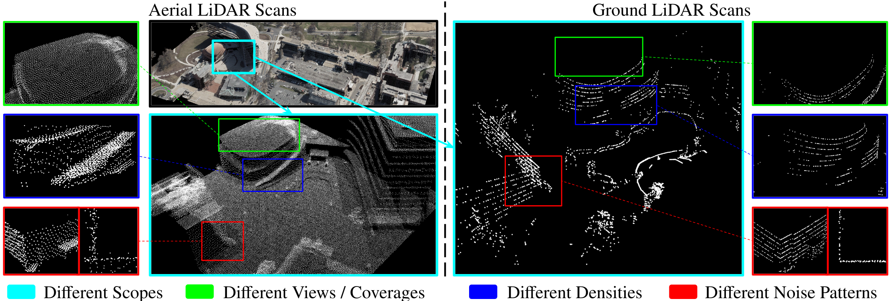
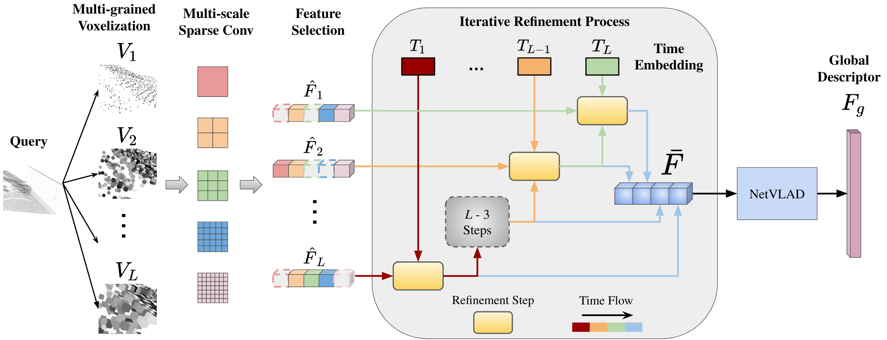

Motivation

Representation gap between aerial and ground sources: We use the bounding box with the same color to focus on the same region and highlight the differences between aerial (left) and ground (right) LiDAR scans.
- Scopes (#00ffff cyan): The aerial scans cover a large region, while ground scans cover only a local area.
- Coverages (#65f015 green): The aerial scans cover the top of the buildings, while ground scans cover more details on the ground.
- Densities (#151cf0 blue): The distribution and density of the points are different because of various scan patterns, effective ranges, and fidelity of LiDARs.
- Noise Patterns (#f03c15 red): The aerial scans have larger noises, as we can see from a bird-eye view and top-down view of a corner of the building.
Network Architecture

Interactive Refinement Visualization
Local Point Cloud Geometry (3D)
Input Query (Ground)
QueryStep 1 Retrieval
Loading...Step 2 Retrieval
Loading...Step 3 (Final) Retrieval
Loading...Refinement Summary
Query Index:
--
Query File:
--
Center UTM:
--
Center Lat/Lon:
--
Timeline Progress
1
Step 1 (Coarse)
--
2
Step 2 (Medium)
--
3
Step 3 (Fine)
--
Active Visual Step
Leaflet Satellite Map (2D UTM Projection)
2D MapRGB Global Pointcloud Map (Centered 3D)
3D Map
Loading 3D Campus Map... (0%)
BibTeX
@InProceedings{Guan_2023_ICCV,
author = {Guan, Tianrui and Muthuselvam, Aswath and Hoover, Montana and Wang, Xijun and Liang, Jing and Sathyamoorthy, Adarsh Jagan and Conover, Damon and Manocha, Dinesh},
title = {CrossLoc3D: Aerial-Ground Cross-Source 3D Place Recognition},
booktitle = {Proceedings of the IEEE/CVF International Conference on Computer Vision (ICCV)},
month = {October},
year = {2023},
}